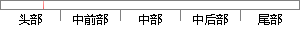

；频域角度 来 看，离焦是 个 低通滤波的过程， 聚焦 图像 比 离焦图像 有更多 的 细节和高频 分量，
片段位置图

相似结果
相似片段：
明显，而且具有更丰富的边缘和细节信息，常见的空域算法有灰度差分法[16][17]、灰度梯度法[18][19]、灰度方差法[20]79，还有灰度熵函数[21][22]等等。从频域角度看，由于离焦是一个低通滤波的过程，当图像对比度不大即离焦时，图像的高频分量相对较少。聚焦图像比离焦图像包含更多的信息和细节，也就相应地包含更多的高频分量，比较典型的频域算法有拉普拉斯算子法[17]、傅立叶变换法[
| 对比库： | WriteCheck云资源库 |
| 来源： | www.yangsky.com 查看来源 |
| 发布时间： | 2014-01-18 |
| 相似率 | 100% （严重抄袭） |